Workloads
The Workloads section displays all running resources within your cluster including Pods, Deployments, Daemon Sets, Replica Sets, Replication Controllers, Stateful Sets, Jobs, Cron Jobs.
Pods
All pods along with their name, namespace, container, cpu, memory, restarts, controlled by, node, age, status are listed here.
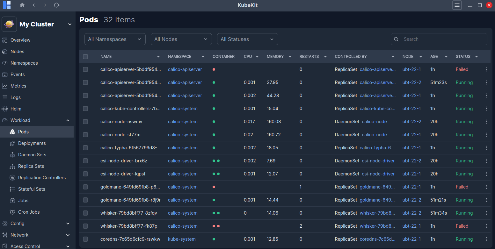
Pod Details
Click on a pod row to view detailed information about it.
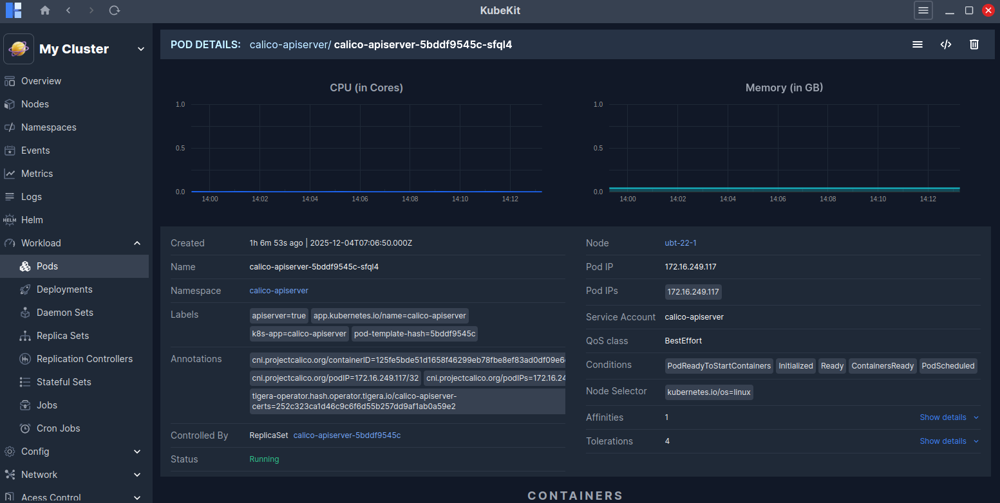
This page shows real-time CPU and Memory usage graphs for the selected pod. You will also find detailed information such as Annotations, Service Account, QoS Class, Conditions, Affinities, Tolerations and more.
In addition, you can view details about the containers running inside the pod, along with real-time CPU and Memory usage graphs, Volumes and Events related to the pod.
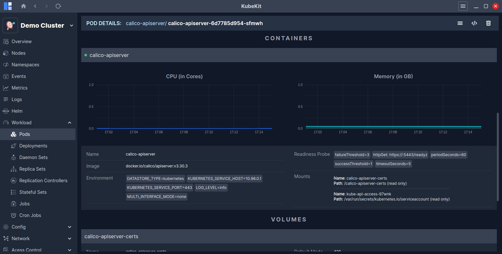
Access pod terminal
Follow the instructions to access the pod terminal.
View pod logs
To view the logs of a pod, click on the three-dot menu and then select the Logs button.
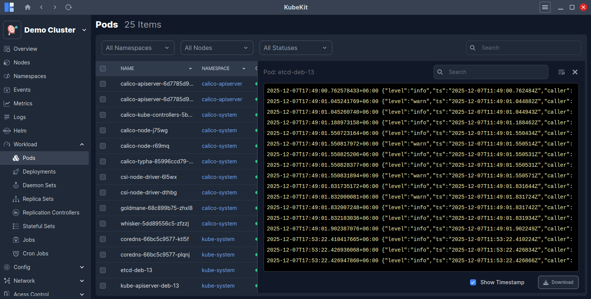
Alternatively, you can view pod logs from the pod detail page by clicking on the Logs button located at the top-right corner.
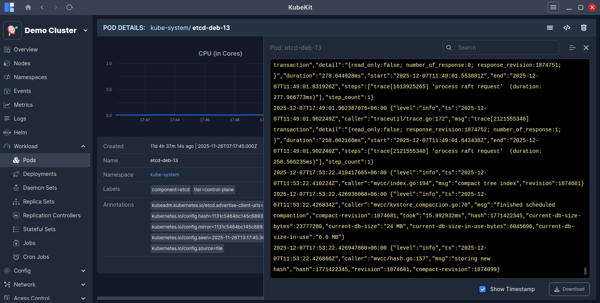
Deployments
All the deployments along with name, namespace, pods, replicas, age and status are listed here.
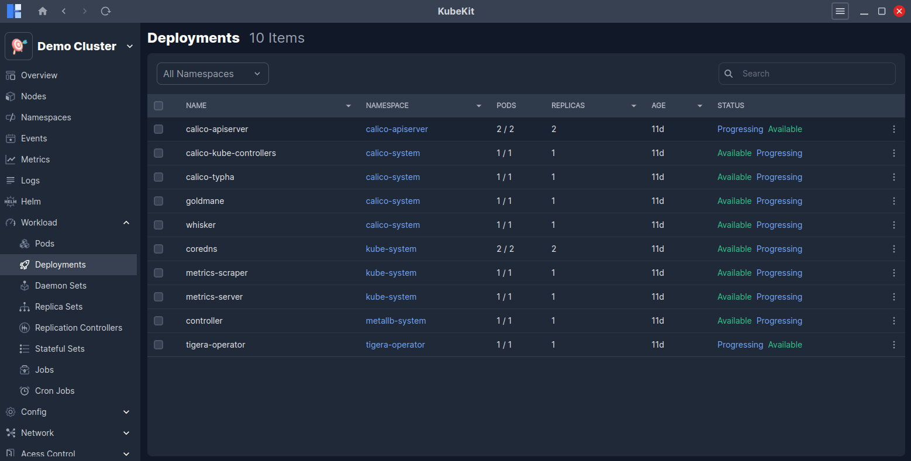
Deployment Details
Click on a deployment row to view detailed information about it.
This page shows real-time CPU and Memory usage graphs for the selected deployment. You will also find detailed information such as Annotations, Selector, Node Selector, Conditions, Affinities, Tolerations, Strategy Type and more.
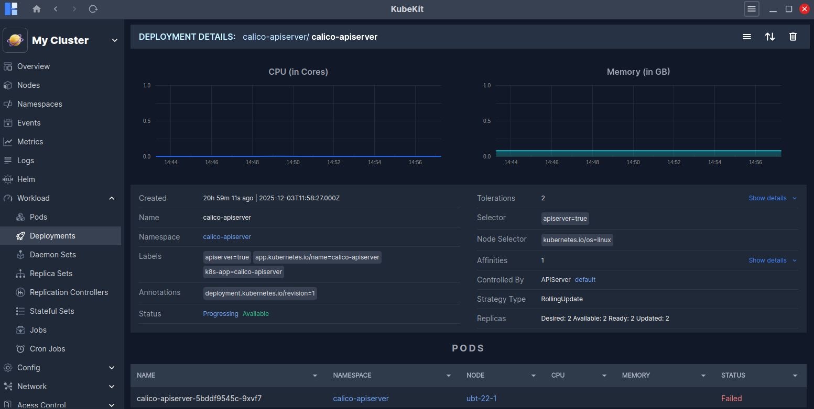
In addition, you can view details about the pods running inside the deployment, along with Events related to the deployment.
Scaling Deployments
You can scale a deployment to your desired number of replicas.
The Scale option is available in the three-dot menu of each deployment row.
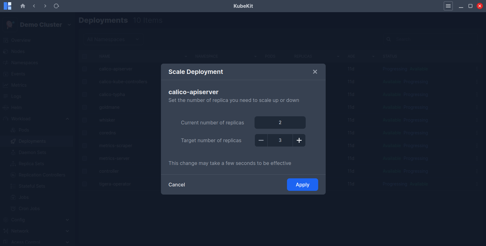
You can also scale from the deployment detail page (opened by clicking the deployment row), where the Scale icon is located in the top-right corner.
View deployment logs
KubeKit allows you to view logs for deployments by combining logs from all pods managed by the deployment according to the timestamp.
To view the logs of a deployment, click on the three-dot menu and then select the Logs button.
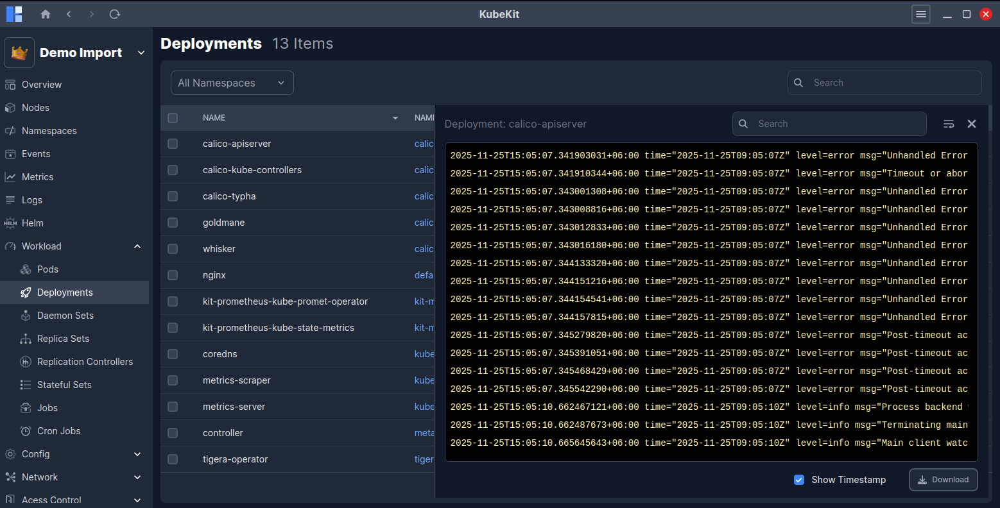
Alternatively, you can view deployment logs from the deployment detail page by clicking on the Logs button located at the top-right corner.
Daemon Sets
All the daemon sets along with name, namespace, pods, node selector, age and update strategy are listed here.
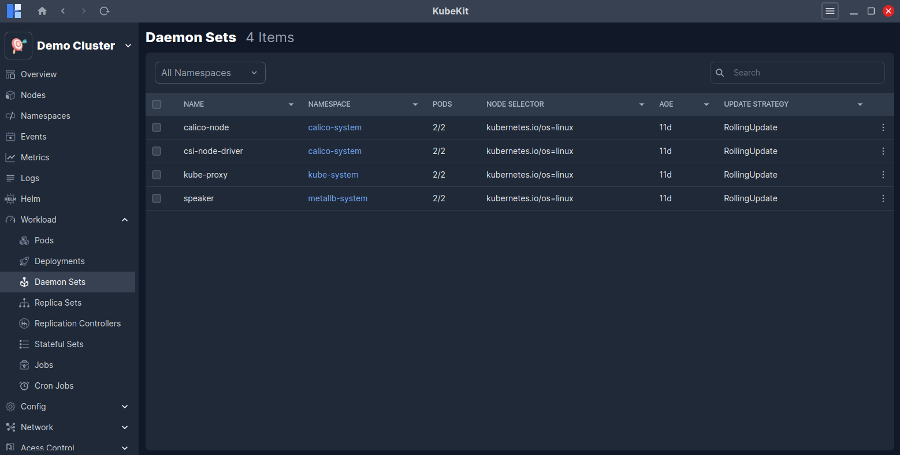
Daemon Set details
Click on a daemon sets row to view detailed information about it.
This page shows real-time CPU and Memory usage graphs for the selected daemon set. You will also find detailed information such as Annotations, Images, Selector, Service account, DNS policy, Schedular, Straegy Type and more.
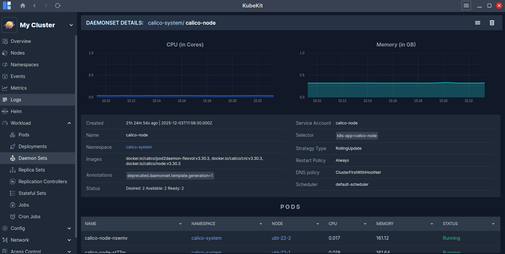
You can view all the pods running under the daemon set, as well as Events related to it.
View Daemon Set logs
KubeKit allows you to view logs for daemon sets by combining logs from all pods managed by the daemon set according to the timestamp.
To view the logs of a daemon set, click on the three-dot menu and then select the Logs button.

Alternatively, you can view daemon set logs from the daemon set detail page by clicking on the Logs button located at the top-right corner.
Replica Sets
All the replica sets along with name, namespace, node selector, desired, current, ready and age are listed here.
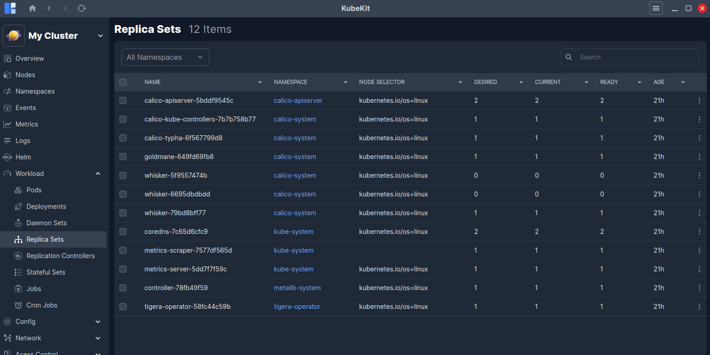
Replica Set details
Click on a replica sets row to view detailed information about it.
This page shows real-time CPU and Memory usage graphs for the selected replica set. You will also find detailed information such as Annotations, Tolerations, Selector, Service account, DNS policy, Schedular, Restart Policy and more.
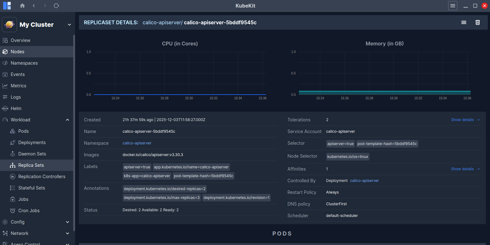
You can view all the pods running under the replica set, as well as Events related to it.
View Replica Set logs
KubeKit allows you to view logs for replica sets by combining logs from all pods managed by the replica set according to the timestamp.
To view the logs of a replica set, click on the three-dot menu and then select the Logs button.
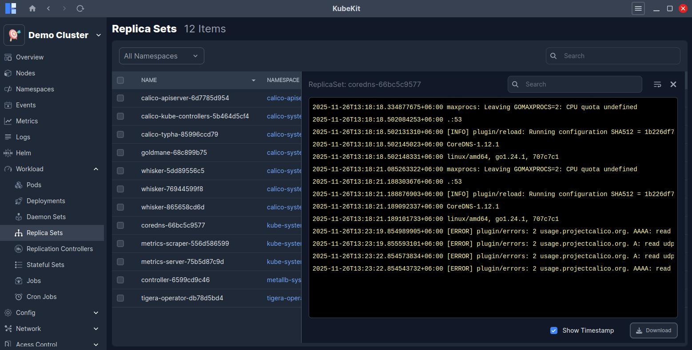
Alternatively, you can view replica set logs from the replica set detail page by clicking on the Logs button located at the top-right corner.
Replication Controller
All the replication controller along with name, namespace, selector, replicas, ready and age are listed here.
You can view logs of any replication controller by clicking the Logs option in the three-dot menu of the replication controller row.
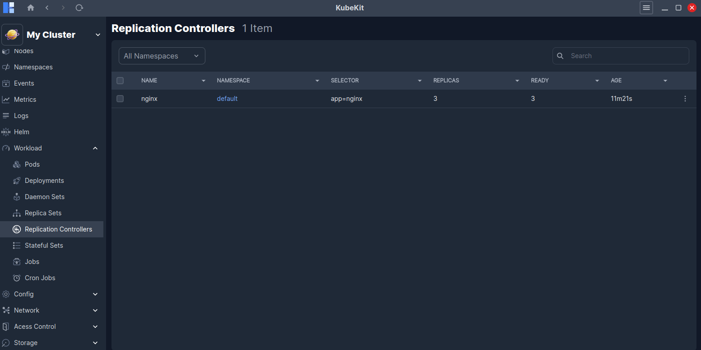
Replication controller details
Click on a replication controller row to view detailed information about it.
This page shows real-time CPU and Memory usage graphs for the selected replication controller. You will also find detailed information such as Labels, Selector, DNS policy, Schedular, Restart Policy and more.
A Logs button is also available at the top-right corner to view the replication controller logs.

You can view all the pods running under the replication controller, as well as Events related to it.
Stateful Sets
All the stateful sets along with name, namespace, service name, pods, replicas, age and update strategy are listed here.
You can view logs of any stateful set by clicking the Logs option in the three-dot menu of the stateful set row.
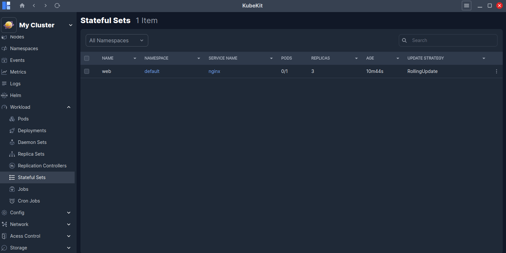
Stateful Set details
Click on a stateful sets row to view detailed information about it.
This page shows real-time CPU and Memory usage graphs for the selected stateful set. You will also find detailed information such as Images, Status, Selector, Schedular, Restart Policy and more.
A Logs button is also available at the top-right corner to view the stateful set logs.
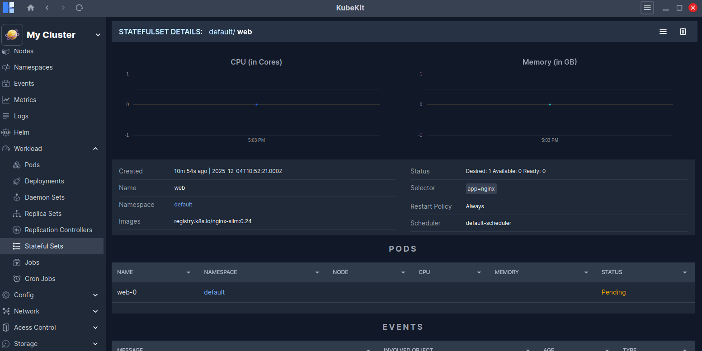
You can view all the pods running under the stateful set, as well as Events related to it.
Jobs
All the jobs along with name, namespace, completions, age and conditions are listed here.
You can view logs of any jobs by clicking the Logs option in the three-dot menu of the jobs row.
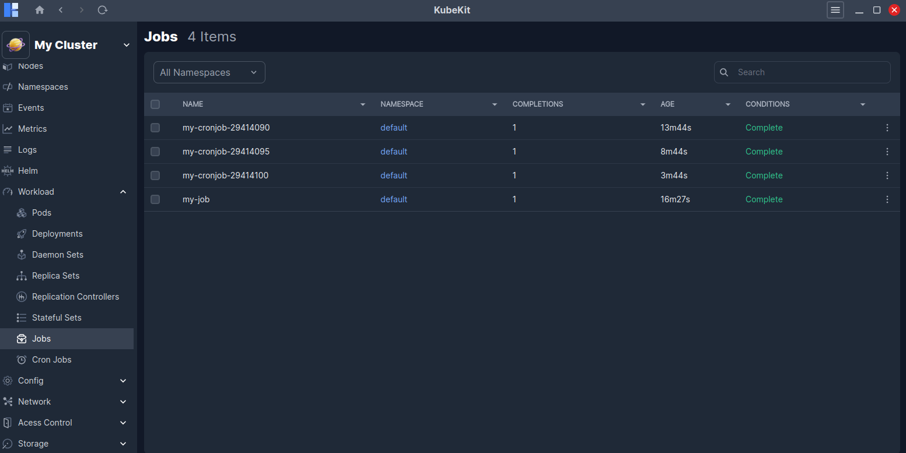
Job Details
Click on a job row to view detailed information about it.
This page shows real-time CPU and Memory usage graphs for the selected jobs. You will also find detailed information such as Annotations, Labels, Node Selector and more.
A Logs button is also available at the top-right corner to view the job logs.
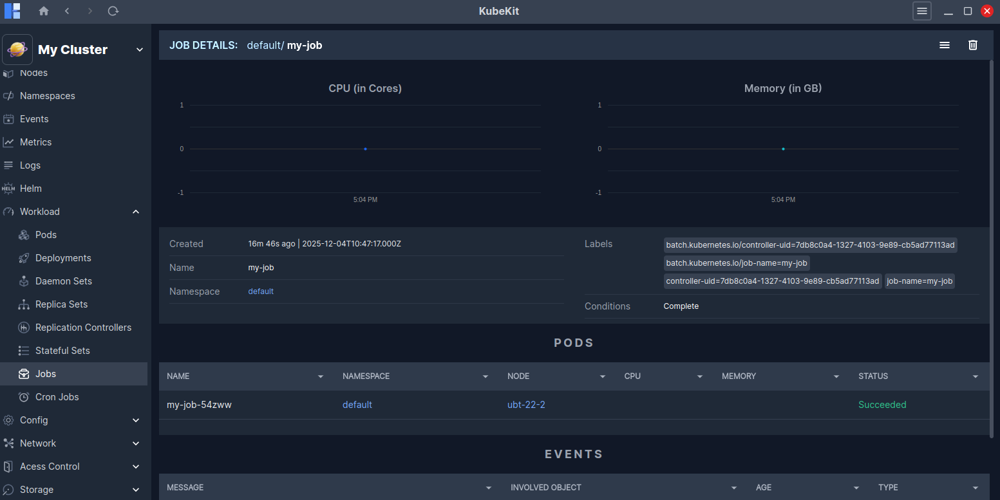
You can view all the pods running under the jobs, as well as Events related to it.
Cron Jobs
All the cron Jobs along with name, namespace, schedule, suspend, last schedule, age, and conditions are listed here. 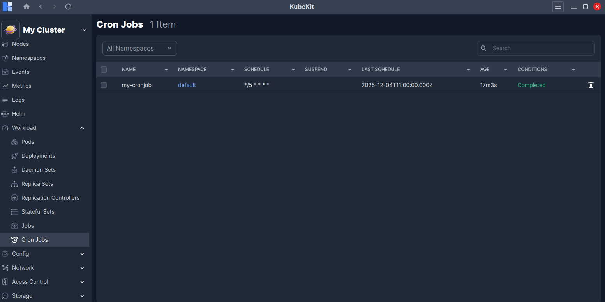
Cron Job Details
Click on a cron Jobs row to view detailed information about it.
This page shows real-time CPU and Memory usage graphs for the selected cron Jobs. You will also find detailed information such as Scheduler, DNS policy, Status, Concurrency policy and more.
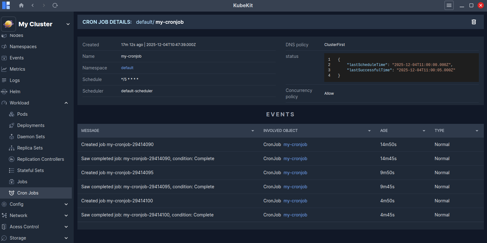
You can view all the events related to these cron jobs.